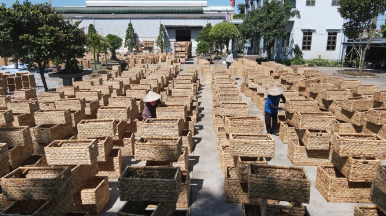
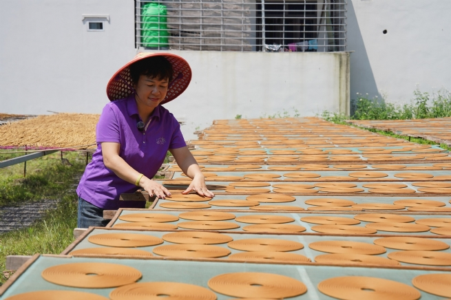
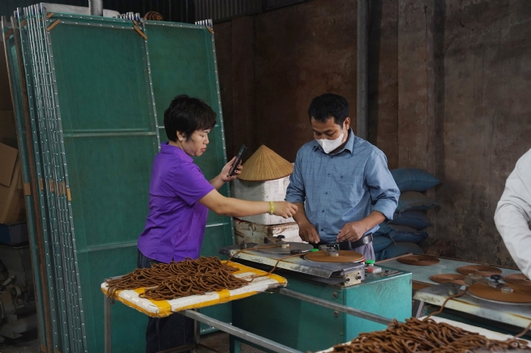
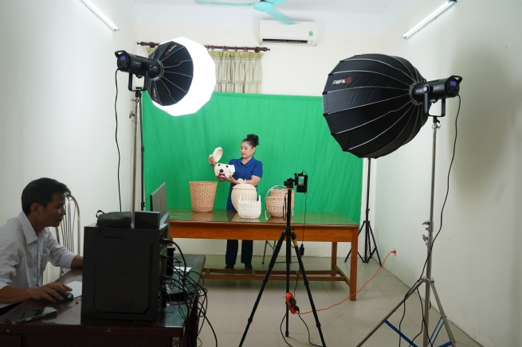

Developing Craft Village Economy: Breakthrough from Digital Transformation
Identifying digital transformation as the “leverage” for breakthroughs, Phượng Dực has boldly expanded the application of technology into various fields of social life, starting from its success in digital transformation for craft village economic development.

In August 2025, Phượng Dực commune launched its local digital transformation program, with the highlight being the “Khát vọng Phượng Dực” (Phượng Dực Aspiration) project. From the initial success of the project as well as the commune’s earlier digital foundation, e-commerce has increasingly become a “lifeline” connecting craft village products to broader and more distant markets. Livestream sessions are not only about selling products, but also turn traditional artisans into confident “storytellers,” bringing their hometown’s products onto e-commerce platforms. Digital transformation has become no longer unfamiliar, but part of daily life and a self-driven need, as every craft village resident and enterprise now knows how to leverage technology to boost production and business.
Visitors to Phượng Dực’s craft villages are often surprised to see small alleys and busy workshops transformed into mini studios. “Our incense-making village has been around for more than 100 years! Today, I’ll introduce to you how our century-old traditional incense-making process works. Here’s a fresh batch just finished!” With a cheerful voice echoing under the golden autumn noon sunlight, Đinh Thị Tuyền, head of Thượng hamlet, began her livestream sales session, proudly introducing her craft village. The streaming lights shone on her sweat-dotted face, her voice becoming more expressive and enthusiastic as orders poured in.
That confidence did not come by chance but from regular digital transformation training sessions organized in Phượng Dực. Each week, villagers have the opportunity to learn how to sell on Facebook, TikTok, YouTube, Zalo; how to film and edit videos; and even practice writing promotional scripts with the help of artificial intelligence.
Recently, Phượng Dực has proactively connected with many influencers and experts in e-commerce and branding. For instance, in just a short span from late August to early September 2025, thanks to their guidance, households that once had only a few dozen interactions now achieve millions of views, with far greater effectiveness in promotion and sales.
Đặng Kim Thêu, Director of An Phú Bamboo and Rattan Co., Ltd., told us that through the commune’s digital transformation training, villagers have mastered the skills of building images, scripts, and introducing products directly to consumers. Customer interest in her company’s products has increased by around 40%. Notably, after joining the “Khát vọng Phượng Dực” project, she suddenly became a “social media phenomenon” in online sales: each livestream session attracted hundreds of thousands, even nearly a million viewers, opening up unprecedented market access opportunities.
In Phượng Dực, hamlet heads are unafraid to sell online, economic officers readily go live with villagers, and the commune Party secretary even participates as an admin of online sales groups to support and connect. This closeness has made digital transformation no longer distant, but part of daily community life.
Đinh Thị Tuyền, head of Thượng hamlet, shared: “When I joined the ‘Khát vọng Phượng Dực’ project, I worked during the day and studied theory at night. What was special was that the commune Party secretary directly supervised and encouraged us. That motivation and close attention pushed everyone forward. In just a short time, every project participant achieved tangible results. Personally, after only 10 days in the project, my personal account had gained over 600,000 followers — a number I had never dared imagine before.”
Just over two years ago, Phượng Dực’s craft villages were almost a “blank spot” in terms of digital transformation. There were no livestreams, “online sales” was still an alien concept, and nearly 100% of craft village revenue came from traditional trade. Villagers considered livestreaming sales something both daunting and unbelievable.
Nguyễn Văn Viễn, head of Lưu Thượng hamlet, shared: “Our hamlet has over 700 households working in handicrafts, continuing nearly 300 years of tradition, but everyone was only familiar with direct trade. Honestly, at first I thought digital transformation was far-fetched. But after some time ‘immersing in it,’ we realized technology had breathed new life into the craft village, surprising even us insiders.”
In the past, Phú Túc commune (now part of Phượng Dực), with 8 hamlets, nearly 1,700 households and 20 enterprises, had only a few large establishments setting up websites to introduce products. Today, the rate of digital transformation adoption has reached over 90%. According to Nguyễn Văn May, Director of Phú Tuấn Export Co., Ltd.: “In the past, the vitality of the craft village relied heavily on export orders. When the international market fluctuated, villagers struggled. Now it’s different: thanks to e-commerce and livestream sessions, our products also reach the domestic market, from North to South. The craft village now walks on ‘two legs,’ strong in exports and steady in the domestic market.”
Especially with products like cỏ tế (a type of grass used in weaving), which previously attracted little attention from Vietnamese consumers, new momentum has emerged. Through digital platforms, handmade products not only “set sail” internationally but also become more familiar to domestic consumers. “Vietnamese people now realize that right nearby they can find beautiful, practical, affordable products without having to look for distant imports,” said Nguyễn Văn May.
From once being a craft village “outside the digital game,” Phượng Dực has stepped confidently onto the “global playing field,” affirming its brand with both skillful hands and modern technology. Deputy Chairman of Phượng Dực Commune People’s Committee, Nguyễn Hữu Khoa, said training for villagers is being implemented step by step, in a more specialized direction tailored to practical needs. “We alternate between foundational and advanced training courses. Once villagers practice proficiently, achieve stable sales, and prove effectiveness, the commune organizes more in-depth training — from building images and scripts to using data analytics tools to optimize sales efficiency,” he explained.
According to Nguyễn Trọng Vĩnh, Chairman of Phượng Dực Commune People’s Committee, along with training villagers in online sales skills, the commune has reviewed idle land, offices, and facilities after restructuring to repurpose them for new functions. On this basis, the commune boldly launched the construction of a Startup and Innovation Design Center at the former Phú Túc Commune People’s Committee headquarters. Notably, at this center, Phượng Dực has invested in building a community livestream studio, providing villagers, businesses, and cooperatives with a professional space to promote products, improve image quality, and enhance customer outreach.
Lê Văn Bính, Party Secretary of Phượng Dực Commune, shared that once the organizational structure was stabilized, the commune organized dialogue sessions to listen to the concerns and aspirations of villagers, businesses, and production groups. Many admitted that digital and digital economy were a fresh breeze for the craft village, but still expressed concerns over issues like taxation, quality management, product standards, and the environment. As local leader, Party Secretary Lê Văn Bính believes that first and foremost, support must be accurate and lawful. For sustainable development, the entire political system must shift from a mindset of “management and supervision” to “service and companionship.” This is precisely how Phượng Dực is creating a new rural model tied to digital transformation — combining government responsibility with the creativity of the people.